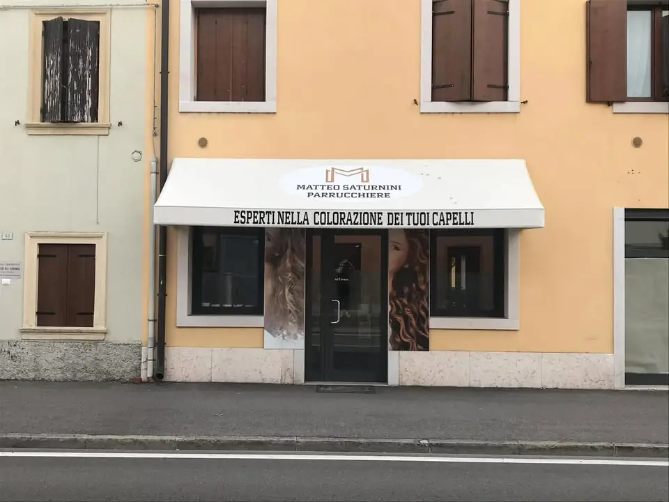
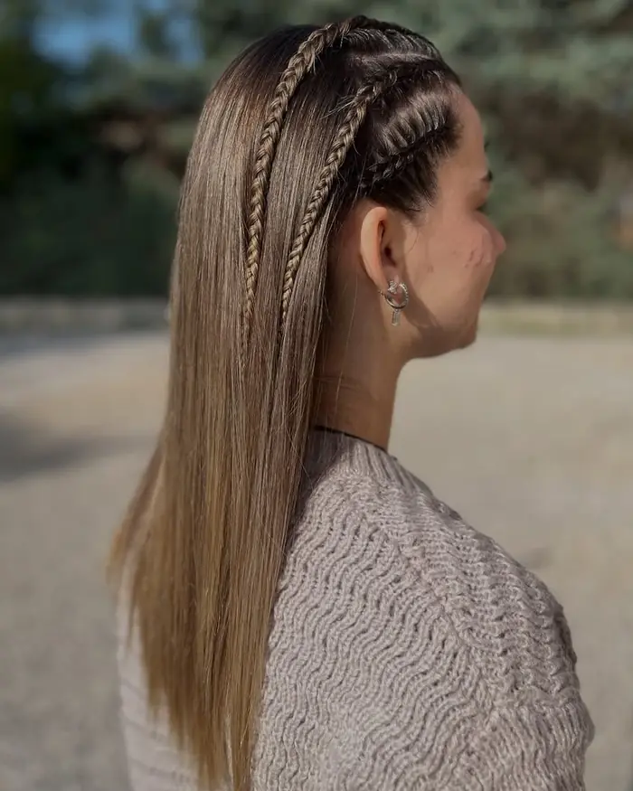
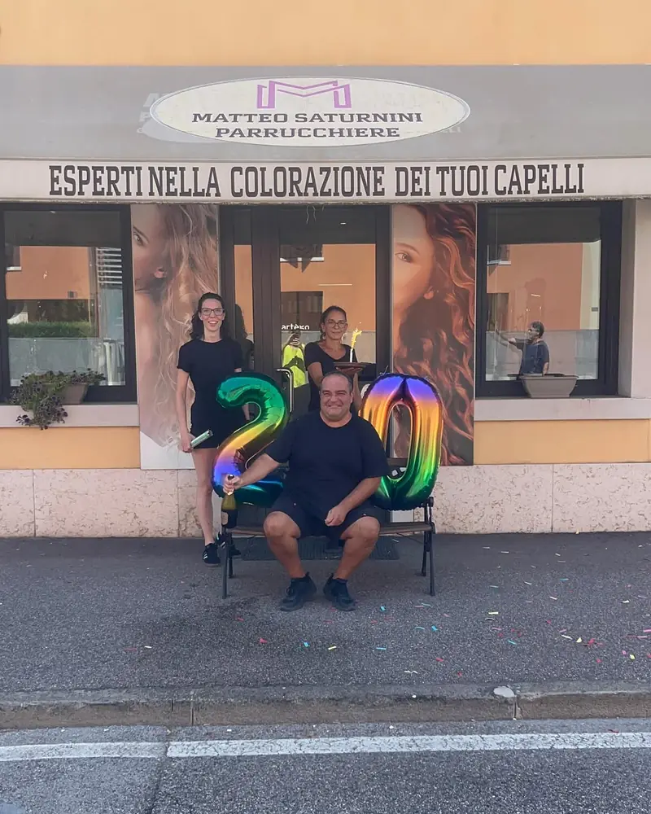
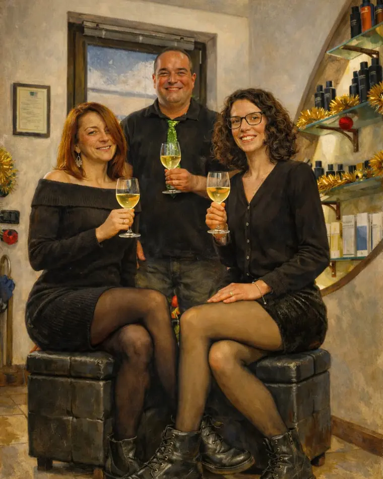

Da 20 anni spettiniamo la noia e coloriamo la vostra vita.
Siamo in viale Europa 46, a Dossobuono. Il colore è la nostra specialità: dal rosso più acceso al biondo più delicato, lo scegliamo insieme e lo costruiamo su di te.

La cartella colori
Sette colori usciti dal nostro salone, fotografati come li hanno portati a casa le clienti. Tocca una ciocca per vederla.
Rosso Caterina
Cosa facciamo
Siamo un salone per tutti i giorni e per i giorni importanti. Il colore resta il nostro mestiere preferito, ma non è l'unico.

-
Colore
La nostra specialità, scritta anche sulla tenda. Dal rosso acceso al castano naturale: scegliamo con te la tonalità e la costruiamo sul tuo viso e sul tuo taglio.
-
Schiariture e riflessi
Biondi, sfumature e riflessi studiati per dare luce e movimento, senza stacchi netti.
-
Taglio e piega
Tagli per capelli lisci, mossi e ricci, con la piega che ti fa uscire pronta.
-
Acconciature da cerimonia
Matrimoni, cerimonie e feste: diverse spose ci hanno scelto per il loro giorno, anche con i capelli ricci.
-
Trecce e semi-raccolti
Acconciature che reggono tutta la giornata e restano comode dalla mattina alla sera.
-
Cura del capello
Idratazione, lucentezza e morbidezza con prodotti professionali, scelti per la salute dei capelli.
Vent'anni in viale Europa
Nel 2026 il salone ha compiuto vent'anni. L'11 settembre abbiamo spento i phon e stappato le bollicine con chi ci ha accompagnato fin qui: un aperitivo in negozio, tutti insieme.
Ogni sorriso, ogni chiacchiera e ogni capello di questi anni ha fatto del salone una seconda casa: qui si ride, si parla e si esce con i capelli che volevi.


Su Google ci date 4,9 su 5
Settantatré recensioni e una media di 4,9. Le più recenti parlano soprattutto di matrimoni e di quanto vi siete sentite a vostro agio fin dal primo appuntamento. Grazie, davvero.
Leggi le recensioni su GoogleOrari
Orari di apertura
| Martedì | 9:00 – 18:00 |
|---|---|
| Mercoledì | 9:00 – 18:00 |
| Giovedì | 9:00 – 18:00 |
| Venerdì | 9:00 – 18:00 |
| Sabato | 8:30 – 16:30 |
| Domenica | Chiuso |
| Lunedì | Chiuso |
Per essere sicura di trovare posto, chiamaci prima: troviamo insieme l'orario giusto.
Dove siamo
Viale Europa 4637069 Dossobuono di Villafranca di Verona (VR)